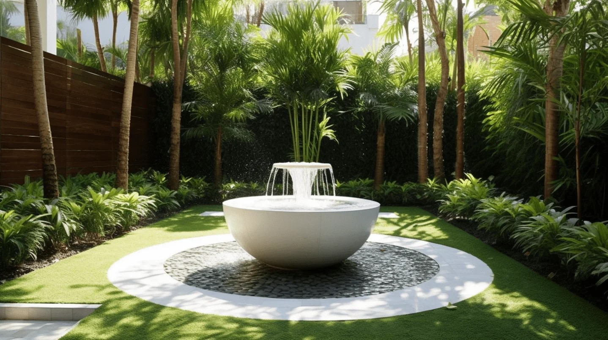
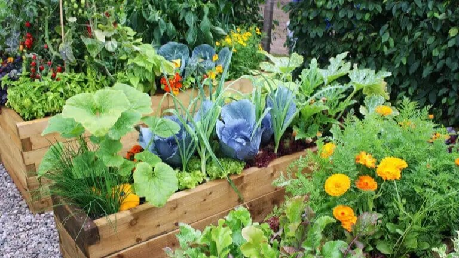
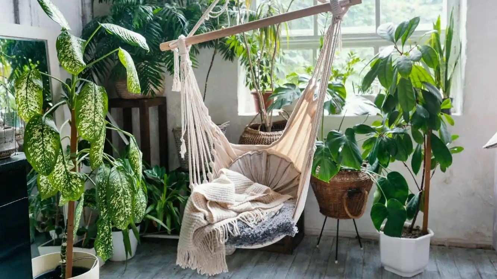
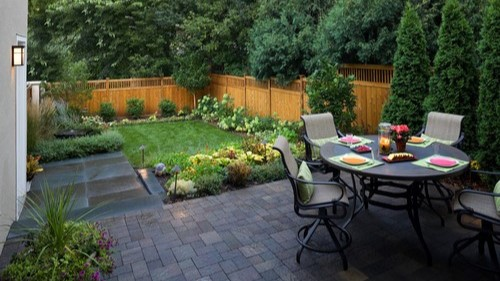

PLANTAR ES DAR VIDA
Cultiva el futuro y vivi la importancia de cuidar nuestro planeta y las generaciones futuras.
PLANTARCREA TU OASIS PERSONAL
   CONOCE LA REFERNCIA DE LOS QUE YA FORMARON PARTE DE PLAN VERDE

Norma Benedetto
¡Me encanta esta página! Como principiante en el mundo de la jardinería, estaba un poco perdida, pero gracias a las guías y tutoriales tan claros que encontré aquí, ahora tengo mi propio huerto en casa. Las fotos y videos son de gran ayuda para visualizar cada paso. ¡Recomiendo esta página a todos los amantes de las plantas!
Francisco Flik
"Vivo en un departamento y siempre quise tener un pequeño jardín. Gracias a esta página, descubrí que es posible cultivar plantas y algunas verduras en macetas. Los consejos me han sido de gran ayuda. ¡Ahora tengo un mini huerto! ¡En mi balcón y puedo disfrutar de mis propios cultivos!"
Javier Balvuena
"Como hombre, nunca pensé que la jardinería fuera lo mío, pero esta página me demostró lo contrario. Los tutoriales son claros y concisos, y los consejos son muy prácticos. Gracias a ella, he logrado tener un huerto productivo en mi patio trasero."

Mirta Iturbe
"Siempre he soñado con tener un jardín lleno de vida y color, pero no sabía por dónde empezar. Gracias a esta página web, encontré una fuente inagotable de inspiración. Las fotos de los jardines son simplemente hermosas y los consejos de diseño son muy útiles